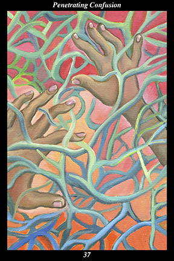

 | IMAGE Two hands try to make their way through a tangle of vines. |
INTERPRETATION
The two hands symbolize our power to grasp events, sort them by feel, and fashion them into meaningful experiences. The tangle of vines symbolizes the complications that arise when we allow ourselves to become overly involved in situations that lie off our true path. Taken together, these symbols mean that you rely on your innate strengths to get free of confusion and regain your momentum.
ACTION
It is a time for seeing through entanglements. Confusion arises when our vision is blurred by false reasoning or past emotions: seeing through confusion requires we both examine our assumptions and conclusions with the clear eye of objective reason and recognize the emotions we have outgrown with the clear eye of the present heart. Because many of these habits of reasoning and emotion are holdovers from an earlier stage of our lives, however, they are easily mistaken for intrinsic aspects of ourselves. For this reason, it is often best to find an ally who has nothing to gain or lose by our decisions and with whom we can examine our reasoning and emotions: where there are inconsistencies in our reasoning, we are using rationalizations to justify not disentangling ourselves; where past emotions are being triggered by present events, we remain entangled because we have not yet acknowledged the emotional progress we have achieved. When we come to terms with our own clear reasoning and present emotions, we can see through the entanglements of past decisions and recognize the decisions we must now make in order to extricate ourselves from difficulty. As difficult and time-consuming as this first stage of the process can be, the stage in which we actually implement our decisions to disentangle ourselves can require even greater effort and patience: it is essential that matters be ended well, at the right time and in the right way, or else we merely leap out of one entanglement and into another.
INTENT
The further we advance on the path of the spirit warrior, the more we honor this discipline of penetrating confusion. Every moment of our lives, indeed, is a confrontation with our own ability to distinguish between the real and illusion. To return to our true path from the least misstep, to correct every mistake before they can put forth seeds, to continually advance upon the goal of an untroubled, wise, and loving spirit—these are the facets of the diamond soul fashioned by the spirit warrior’s own hands.
SUMMARY
Do not blame others. While some of these entanglements are not fair or reasonable, most of them result from decisions you made. While some of these problems could not be foreseen, most involved known risks you were warned about beforehand. Work patiently and methodically to disentangle yourself. Do not let the cost detract from the prize. Do not indulge self-pity.
THE LINE CHANGES
1° When people want to stand on the other shore without actually crossing the river, it is all just imagined progress. Resist your inclination to dabble in complex matters, acquiring only a taste of the full banquet. If this is really of interest to you, stop here and study it deeply for a long while.
2° When people are self-sacrificing out of loyalty and duty, they establish a precedent that inspires all around them. When your superior is wrongly attacked, resist any advice to save yourself. This is a partnership of mutual
benefit—better to fall with the one who supported you than regret inaction.
3° The climate is changing—competition and self-promotion are inadvisable right now. What is needed of you at this time is consistent effectiveness and dependability. Resist the temptation to lead with your usual strength—develop a new demeanor that pleasantly surprises all around you.
4° When you have tried various approaches to advancing to the next level of influence and have been rebuffed at every turn, go back to square one and take up a new idea to develop. This allows you to fold your previous work into the new. Resist any loss of confidence—your time is coming.
5° Wave after wave of problems arise and, just as you are feeling overwhelmed, assistance comes from others who share your vision and values. Resist their efforts to downplay the significance of their help—display your sincere gratitude every chance you get. Your fortune is changed for the better.
6° Rain erodes the mountain, yet still it stands—weathered, but that merely reveals its character. The material hones the spiritual, yet still it is dull—sharper, but that merely reveals its potential. Everything below is an ally, awakening the higher from its daydream—resist spiritual drowsiness.